Как использовать ML Deformer
Обучите модели деформации сетки на основе машинного обучения для персонажей со скиннингом с помощью ML Deformer.
Машинное обучение (ML) Deformer — это фреймворк в Unreal Engine, с помощью которого можно получать высокоточные деформации сетки для персонажей и объектов во время выполнения. Используя файл Alembic (.abc), содержащий набор данных о желаемой деформации сетки, вы можете обучить одну из моделей ML Deformer в Unreal Engine, чтобы она аппроксимировала эту высококачественную деформацию сетки с высокой производительностью во время выполнения. Процесс обучения ML Deformer основан на трех входных данных: Объект скелетная сетка. Объект анимационная последовательность, на котором ваш персонаж изображен в разных позах, охватывающих широкий диапазон движений. Объект кэш геометрии, содержащий нужные деформации сетки в этих позах. На основе этих трех входных данных платформа ML Deformer создает обученный объект ML Deformer, который можно использовать в сочетании с компонентом ML Deformer в чертеже персонажа для выбора деформаций сетки во время выполнения. Редактор ML Deformer содержит набор инструментов и настроек, которые можно использовать для тонкой настройки и тестирования процесса обучения, чтобы добиться высококачественной деформации сетки во время выполнения. В этом документе представлен обзор фреймворка ML Deformer в Unreal Engine, включая справочные материалы по ресурсу ML Deformer, редактору ML Deformer и компоненту ML Deformer. В документе также содержится информация о различных моделях ML Deformer, которые используются для обучения системы ML Deformer, таких как модель Neural Morph и модель ближайшего соседа.
ML Deformer Framework является плагином и должен быть включен перед использованием. Перейдите в меню Unreal Engine в Правка > Плагины, найдите ML Deformer Framework в разделе Анимация и включите его. После включения плагина вам нужно будет перезапустить редактор.
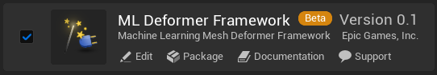
У вас есть модель персонажа, состоящая из сетки и скелета, которую можно использовать как в Unreal Engine, так и в Autodesk Maya.
Подробное руководство по настройке фреймворка ML Deformer для выбора высококачественных деформаций сетки во время выполнения см. в документации Использование ML Deformer.
Здесь вы можете ознакомиться с обзором редактора ML Deformer, а также с описанием его панелей и инструментов.
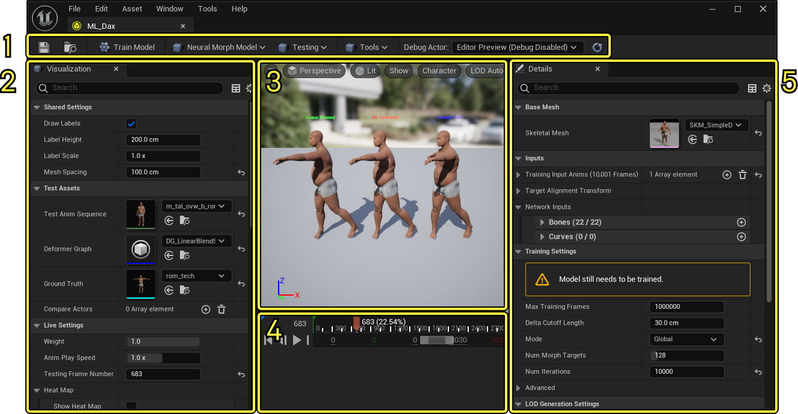
Здесь вы можете ознакомиться со списком инструментов на панели инструментов ML Deformer Editor и описанием функций каждого из них:

При использовании модели ML Deformer на основе метода ближайших соседей вы можете использовать инструмент для извлечения ключевых поз, чтобы извлечь данные о ключевых позах из обучающей анимации персонажей, а также сгенерировать данные для кэширования геометрии. После внесения любых изменений в свойства нажмите кнопку Извлечь в нижней части окна, чтобы начать операцию.
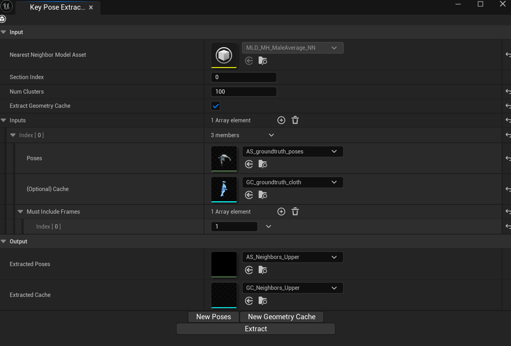
Здесь вы можете ознакомиться со списком свойств инструмента для извлечения ключевых поз и описанием их функций:
С помощью функции «Получить статистику по ближайшему соседу» можно сгенерировать данные об ассет-деформере машинного обучения «Ближайший сосед» для вашего персонажа. После внесения любых изменений в свойства нажмите кнопку Получить статистику в нижней части окна, чтобы начать операцию.
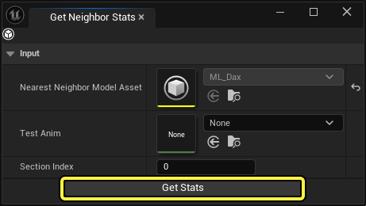
Здесь вы можете ознакомиться со списком свойств инструмента «Получить статистику по ближайшему соседу» и описанием их функций:
Здесь вы можете ознакомиться со списком свойств панели визуализации редактора ML Deformer и описанием их функций:
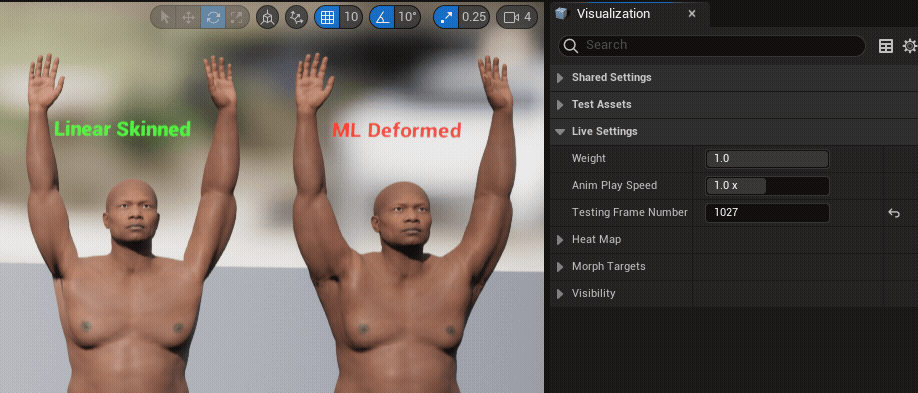
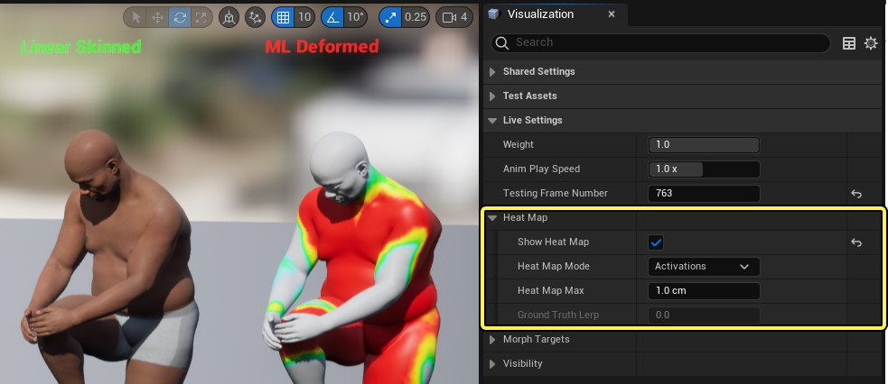
Здесь вы можете ознакомиться со списком общих свойств панели Сведений редактора ML Deformer, которые применяются ко всем моделям ML Deformer, и описанием их функций. На панели сведений представлены настройки, влияющие на работу модели во время выполнения. К ним относятся входные данные, настройки обучения и сжатия.
Платформа ML Deformer Framework использует обученную модель ML Deformer для выбора вариантов деформации анимированной сетки во время выполнения. Каждая модель лучше всего подходит для решения определенных задач.
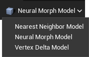
Модель ближайшего соседа лучше всего подходит для деформации сложных сеток и объектов, таких как одежда. Эта модель все еще находится на экспериментальной стадии разработки, поэтому мы не рекомендуем использовать ее в проектах, где важна ее функциональность и стабильность.
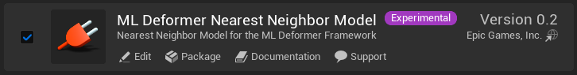
Здесь вы можете ознакомиться со списком конкретных свойств модели ближайшего соседа и описанием их функций:
Нейронная морфологическая модель — это универсальная модель машинного обучения для деформации, которая лучше всего подходит для деформации моделей персонажей, например для расчета движения кожи и мышц в сочетании с движениями конечностей и всего тела.
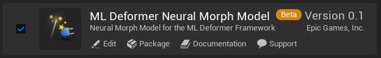
Здесь вы можете ознакомиться со списком специфических свойств нейронной морфологической модели и описанием их функций:
Собственность Описание Режим Выберите режим работы нейронной сети ML Deformer. Вы можете выбрать один из следующих вариантов: Локальная: работает с локальной нейронной сетью для каждой кости. Этот режим обеспечивает более высокую производительность, но качество деформации может снизиться. Этот режим оптимизирован для изучения деформаций вокруг отдельных суставов и требует наименьшего количества обучающих данных. Кроме того, в этом режиме создается больше разреженных целевых объектов Morph, что снижает нагрузку на память и ускоряет обработку на графическом процессоре. При использовании локального режима вы также заметите повышение производительности центрального процессора, поскольку оценка костей разбивается на более мелкие этапы, а не выполняется для всего скелета сразу. Этот параметр следует использовать по умолчанию, если только у вас не возникают трудности с восстановлением обучающих данных. Для каждой кости или кривой в этой модели будет создан набор целевых объектов для морфинга. Общее количество созданных целевых объектов для морфинга будет равно: (num_bones + num_bone_groups) * num_morphs_per_bone_or_curve + (num_curves + num_curve_groups) * num_morphs_per_bone_or_curve + 1 + 1 в конце — это всего лишь одна цель морфинга, которая создается всегда и используется для нормализации данных. Это всегда первая цель морфинга в списке сгенерированных целей. Локальный режим лучше справляется со структурированными данными, такими как структурированные ПЗУ, чем глобальный режим. Global: работает с использованием глобальной сети, которая учитывает все кости вместе. Этот режим работает с меньшей производительностью, но позволяет добиться более качественной деформации сетки. Этот режим изучает деформацию на основе скоординированных движений нескольких суставов, но требует большего количества обучающих данных. Этот режим похож на локальный, но предполагает, что все кости объединены в одну большую группу. Лучше всего он работает со случайными позами в качестве обучающих данных. Любые изменения в этом свойстве приведут к необходимости переобучения модели. Количество Целей Морфинга Это значение показывает, сколько целевых объектов Morph будет создано для вашей сетки в процессе обучения. Чем выше значение, тем выше качество результата, но тем больше памяти и вычислительной мощности потребуется. Рекомендуется установить минимально возможное значение, сохранив при этом качество деформации. Если для параметра «Режим» установлено значение Локальный, это значение указывает на количество целевых объектов Morph, которые будут созданы для каждой кости, кривой, группы костей и группы кривых. При использовании локального режима рекомендуется вводить минимально возможные значения, сохраняя при этом ожидаемое качество. Рекомендуется, чтобы это значение находилось в диапазоне от 4 до 12, но оно может варьироваться в зависимости от потребностей вашего проекта. Если для параметра «Режим» установлено значение Global, это значение представляет собой общее количество целевых объектов Morph, которые будут созданы для вашей сетки. Рекомендуется устанавливать значение в диапазоне от 64 до 256, но оно может варьироваться в зависимости от потребностей вашего проекта. Любые изменения в этом свойстве приведут к необходимости переобучения модели. Количество Итераций Задайте количество итераций для обучения модели. Для тестирования и проектов в стадии разработки подойдут меньшие значения, например 1000 - 3000 — они дадут приемлемые результаты. Для создания финальных версий активов лучше использовать большие значения, например 100000 - 1000000 — они обеспечат более высокое качество. Если вы видите, что потери не уменьшаются, то дальнейшие итерации, скорее всего, не улучшат результат. Любые изменения в этом свойстве приведут к необходимости переобучения модели. Количество Скрытых слоев Задайте количество скрытых слоев в модели нейронной сети. Чем больше значение, тем ниже производительность проекта, но тем более сложные деформации сетки можно обработать. При использовании локального режима обычно достаточно значения 1 . При использовании глобального режима значение от 1 до 3 обычно обеспечивает наилучший баланс производительности и качества. Любые изменения в этом свойстве приведут к необходимости переобучения модели. Количество нейронов На слой Задайте количество единиц на нейрон в скрытом слое. Чем больше значение, тем ниже производительность, но тем более сложные деформации сетки можно будет выполнять. Любые изменения в этом свойстве приведут к необходимости переобучения модели. Коэффициент Регуляризации Задайте коэффициент регуляризации обучающих данных, который помогает обобщить модель. Более высокие значения также могут привести к уменьшению количества целевых морфов, что снизит нагрузку на память графического процессора и повысит его производительность. Значение по умолчанию для этого свойства — 1.0, но если оно не дает хороших результатов, попробуйте отключить это свойство, установив значение 0.0 и постепенно увеличивая его, пока не найдете наименьшее значение, при котором результаты будут хорошими. Это свойство и его проявления зависят от масштаба модели. Любые изменения в этом свойстве приведут к необходимости переобучения модели. Бета-версия Сглаживания Потерь Задайте параметр бета в функции сглаживания L1. Это свойство сглаживает результаты сгенерированных деформаций и зависит от масштаба сетки. Чем меньше значение, тем меньше сглаживание. Для сетки персонажа обычного размера обычно используется значение 1.0 , а для более мелких сеток лучше подойдут меньшие значения. Значение 0.0 полностью отключает сглаживание. Если ошибка превышает это значение бета или равна ему, вместо функции потерь L1 будет использоваться функция потерь L2. Любые изменения в этом свойстве приведут к необходимости переобучения модели. Включить Костные Маски Если для свойства Mode установлено значение Local, то при включении этого свойства можно будет использовать маски для отдельных костей и групп костей, генерируя маску влияния для каждой кости на основе информации о скиннинге. Это позволит применять деформации, локализованные в области вокруг сустава. Включение этого свойства повышает качество локальной деформации суставов, снижает потребление памяти графического процессора и повышает его производительность. Любые изменения в этом свойстве приведут к необходимости переобучения модели. Гири для изменения формы зажимов Если эта опция включена, сгенерированные веса Morph Target будут ограничены диапазоном значений, которые были видны во время обучения. Это свойство может улучшить результаты деформации, если персонаж находится в позе, которая не наблюдалась во время обучения и не имеет близкого аналога в обучающих данных. Таким образом можно избежать странных деформаций, ограничив веса Morph Target диапазоном значений, которые были видны во время обучения. Включать Нормали Если эта функция включена, модель будет включать нормали в целевые объекты Morph Targets в процессе обучения. Включение этой функции может повысить производительность по сравнению с пересчетом нормалей, но при этом может привести к снижению качества деформации сетки и увеличению объема памяти, занимаемого сохраненными целевыми объектами Morph Targets. Порог Дельта - нуля Здесь можно задать значение, которое будет определять пороговое значение для дельта-значений целевых объектов Morph Target. Дельта-значения, меньшие или равные этому пороговому значению, будут игнорироваться и заменяться на 0.0. Это свойство полезно для удаления небольших дельта-значений из целевых объектов Morph Target, что снижает потребление памяти во время работы. Однако если задать слишком высокое значение, это может привести к появлению визуальных артефактов в результатах. Значение 0.0 позволит сгенерировать целевые объекты Morph Target самого высокого качества, но при этом будет потребляться больше памяти во время работы. Установка функционального значения для этого свойства окажет одно из самых значительных влияний на производительность и использование памяти вашего проекта при использовании ресурсов ML Deformer. Уровень сжатия Задайте уровень сжатия сгенерированной цели Morph Target. Чем выше значение, тем сильнее сжатие, но это может привести к появлению визуальных артефактов на сетке. Чем ниже значение, тем меньше сжатие, что обеспечивает высокое качество, но требует больше памяти. Для достижения оптимальных результатов рекомендуется использовать значения от 20.0 до 200.0. Прежде чем настраивать свойство Delta Zero Threshold для своего проекта, рекомендуется сначала правильно задать значение свойства Уровень сжатия. Канал маски Задайте данные канала, представляющие собой множители дельта-маски. С помощью этого свойства можно разделить и распределить влияние на ML Deformer в определенных областях, например в местах с высокой подвижностью суставов, таких как шея или плечи персонажа. Значения цвета закрашенных вершин будут использоваться в качестве весовых множителей для дельт ML Deformer, применяемых к этой вершине. Вы можете выбрать канал маски в раскрывающемся меню свойства. Доступны следующие каналы: Цвет вершины красный: используется канал «Маска красного цвета вершины». Цвет вершины синий: используется канал «Маска синего цвета вершины». Цвет вершины зеленый: используется канал «Маска зеленого цвета вершины». Цвет вершины альфа: используется канал «Маска альфа-цвета вершины». Это свойство может быть полезно для того, чтобы с помощью уникальных настроек оптимизировать процесс обучения для конкретных участков сетки, в которых вы хотите улучшить деформацию, а не обучать всю сетку с одними и теми же настройками. Канал Инвертирующей маски Если для свойства Канал маски задано использование определенного канала маскировки цвета вершин, вы можете включить это свойство, чтобы инвертировать влияние. Например, если вы закрасите часть сетки с помощью маскировки красного цвета вершин, а затем зададите для канала маски использование красного цвета вершин и включите это свойство, закрашенная область не будет двигаться.
Модель Vertex Delta — это пример деформатора, работающего исключительно на графическом процессоре. Это упрощенная реализация модели нейронной деформации в глобальном режиме, полностью работающая на графическом процессоре. Она не использует целевые объекты для деформации, но при этом не использует сжатие и другие оптимизации, из-за чего работает медленнее и требует больше памяти. Ее не следует использовать в продакшене, она предназначена только для сравнения с моделями, которые запускают свои нейронные сети на графическом процессоре. Примечание. Модель Vertex Delta ML Deformer — это демонстрационная модель на базе графического процессора, которую не следует использовать в продакшене. Использование модели Neural Morph со свойством Mode, установленным в значение Global, позволит добиться аналогичных, но более стабильных результатов в продакшене.
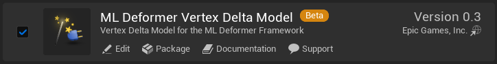
Здесь вы найдете справочную информацию об отладке и устранении проблем с результатами и производительностью ML Deformer в Unreal Engine.
После обучения вы можете протестировать модель, проигрывая анимационные последовательности для персонажа. Это позволит вам проверить, как выглядят деформации в позах, которые могут немного отличаться от обучающих данных. ML Deformer может выдавать неточные результаты, если указанные входные данные сильно отличаются от значений, использованных при обучении. Поэтому так важно, чтобы обучающие данные охватывали широкий спектр поз. В реальных проектах позы обычно смешиваются с использованием нескольких источников, а не воспроизводятся как единая анимация. Помимо смешивания поз, вы можете использовать процедурные модификации и такие методы, как обратная кинематика (ИК). Поэтому тестирование с использованием одной анимации не всегда дает хорошие результаты, если только вы не записали игровой процесс. С помощью инструментов отладки Actor Debugging в редакторе ML Deformer вы можете просматривать результаты работы ML Deformer в полной системе анимации вашего проекта. Если подключиться к сеансу Play in Editor (PIE) и выбрать персонажа, у которого есть компонент ML Deformer, использующий тот же ресурс ML Deformer, что и у вас, редактор ML Deformer скопирует позу персонажа из сеанса PIE и применит деформации в окне просмотра редактора ML Deformer. Чтобы начать отладку PIE-актера в редакторе ML Deformer, откройте ресурс ML Deformer, который использует персонаж, которого вы хотите отладить, дважды щелкнув по нему в браузере контента. Затем запустите сеанс PIE, нажав кнопку «Воспроизвести» в панели управления PIE. После запуска сеанса перейдите на вкладку ML Deformer Editor. Затем в окне PIE вы увидите все объекты, доступные для отладки, с ограничивающими рамками. По умолчанию ограничивающая рамка фиолетовая, а название объекта отображается белым цветом.
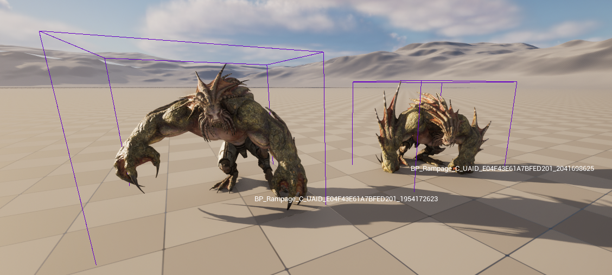
Теперь в редакторе ассетов ML Deformer с помощью раскрывающегося меню Debug Actor на панели инструментов выберите элемент Actor. Откроется список объектов, использующих этот ассет ML Deformer. Если вашего объекта нет в этом списке, нажмите кнопку Обновить справа, рядом с раскрывающимся меню. Затем выберите объект, который хотите отладить. Либо нажмите клавишу F8, чтобы обновить список. Выбранный актер будет выделен в окне просмотра уровня вашего проекта зеленым прямоугольником и желтым именем по умолчанию.
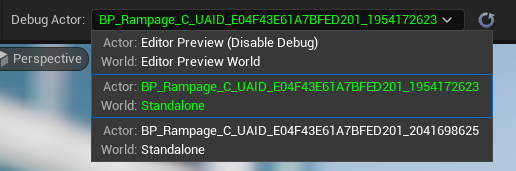
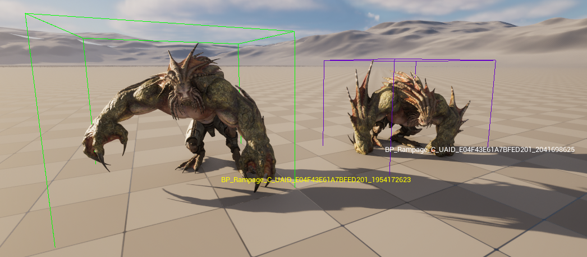
Теперь вы можете отлаживать результаты работы ML Deformer, используя всю систему анимации вашего персонажа в PIE, с помощью таких инструментов на панели «Визуализация», как тепловые карты.
Будет работать только режим тепловой карты Activations, поскольку в игре нет достоверных данных.
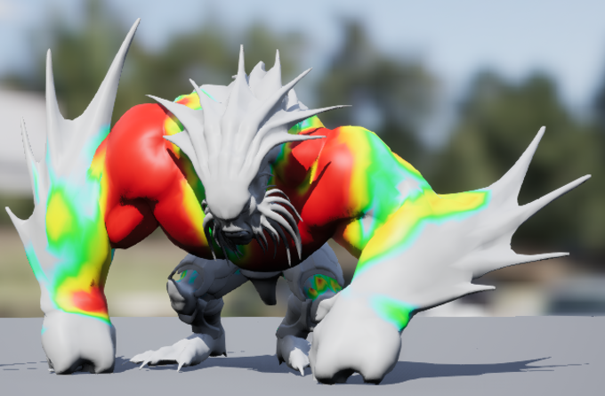
Чтобы завершить сеанс отладки, остановите сеанс PIE или выберите Отключить отладку в инструменте ML Deformer Отладка актора в раскрывающемся меню.
Вы можете проверить производительность вашего объекта ML Deformer с помощью Unreal Insights, используя элемент Morph Target в разделе GPU записанного сеанса. Чтобы просмотреть и отладить производительность процессора, используйте раздел MLDeformerComponent в профилировщике процессора. Чтобы узнать о производительности графического процессора, воспользуйтесь разделом Morph Targets в разделе «Информация о графическом процессоре».
Здесь вы найдете информацию о результатах устранения неполадок и проблемах с производительностью, которые могут возникнуть при использовании ML Deformer в Unreal Engine.
Проблема Возможные решения Результаты деформации далеки от идеала: Подумайте о том, чтобы увеличить количество кадров в обучающих данных. Для среднестатистических персонажей рекомендуется использовать не менее 3000 кадров обучающих данных, но чем больше кадров, тем лучше будут получаться деформации. Для достижения хороших результатов рекомендуется использовать не менее 7500 кадров обучающих данных. Возможно, ваши обучающие данные не охватывают весь диапазон движений, необходимый для вашего проекта. Рекомендуется расширить набор обучающих данных, включив в него все движения персонажа, для которых требуется покрытие деформацией. Убедитесь, что в обучающих данных, анимационной последовательности и геометрическом кэше совпадают номера кадров, частота воспроизведения, количество вершин в общих для них сетках и позы в каждом кадре. Убедитесь, что сетки в анимационной последовательности и геометрическом кэше правильно выровнены для точного определения дельт вершин. Проверьте дельты вершин в режиме обучения на нескольких кадрах. Включите отображение дельт. Установите для свойства Weight значение 1.0, а для свойства Ground Truth Lerp — значение 0.0. Убедитесь, что нормали объекта Morph Target вычисляются во время выполнения. Чтобы это исправить. либо используйте граф деформаций, либо включите свойство Recompute Tangents объекта Skeletal Mesh. Убедитесь, что СвойствоMax Num Training Frames не ограничивает доступные данные обучения. Установите для свойства Num Iterations высокое значение, например 5000. При необходимости это значение может быть уменьшено позже. Входные данные ML Deformer могут содержать слишком много ссылок на кости. Уменьшите это значение только до максимального количества анимированных костей, необходимого для передачи движений вашего персонажа во время тренировки. При использовании локального режима может создаваться слишком много объектов преобразования или скрытых слоев, попробуйте уменьшить эти значения. Установите для свойства Размер пакета значение 64 или 128. Отключите свойство Бета-коэффициент сглаживания потерь или Коэффициент регуляризации, установив значение 0.0. Если это решит проблему, попробуйте использовать меньшее значение, чем было раньше. Рекомендуется найти минимально возможное значение, сохранив при этом необходимый для вашего проекта уровень качества. Установите для скорости обучения значение 0.001, 0.0001 или 0.01. Если вы работаете с сеткой меньшего размера, чем обычная сетка персонажа, например с лицевой сеткой, попробуйте настроить свойства Smooth Loss Beta и Regularization в сочетании с этими значениями. Оперативная память или производительность не идеальны: Если производительность вашего графического процессора низкая, попробуйте уменьшить количество целевых объектов для морфинга. Рекомендуется, чтобы общее количество сгенерированных целевых объектов для всего персонажа составляло от 64 до 256. При использовании режима Local значение Num Morph Targets применяется к каждой установленной вами кости / кривой / группе. Уменьшите значение порогового значения дельты, чтобы уменьшить количество малых значений дельты в сгенерированных целевых объектах Morph. Увеличьте значение свойства количество итераций, чтобы создать более разреженные целевые объекты Morph. Увеличьте значение свойства коэффициент регуляризации. При использовании режима Глобальный попробуйте уменьшить значение свойства количество скрытых слоев.
Здесь вы можете ознакомиться с дополнительными ресурсами по ML Deformer, такими как проект Sample Content и выступления разработчиков, чтобы узнать больше об использовании ML Deformer в Unreal Engine.
О том, как настроить ML Deformer с помощью модели Neural Morph, а также о том, как сгенерировать Alembic-файл со случайными позами и данными о деформации геометрии в Autodesk Maya, читайте в следующем руководстве:
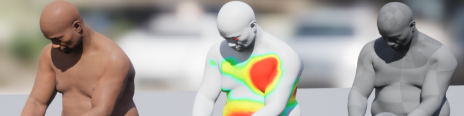
Кроме того, вы можете скачать пример использования машинного обучения (ML) в проекте Deformer, в котором демонстрируются деформации сетки персонажа в полный рост с помощью системы ML Deformer. В примере используется интерактивный ролик с анимированным персонажем, управляемым Control Rig, который можно просмотреть и сравнить с линейной сеткой, смоделированной с помощью ML Deformer. Кроме того, вы можете управлять персонажем с помощью альтернативных анимаций, Control Rig правок, переключения видимости одежды и кожи, а также наблюдать за эффектами различных моделей ML Deformer, чтобы отслеживать изменения в сетке и больше узнать о системе и возможностях ML Deformer.
Вы можете скачать пример проекта ML Deformer с сайта Fab.
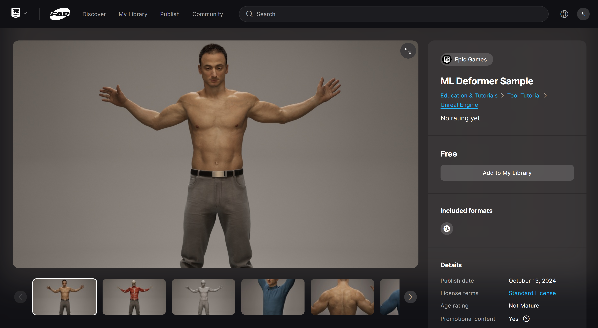